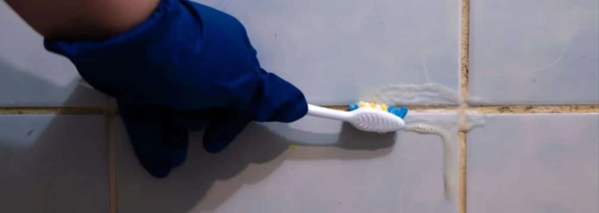

- Le champignon est dans le silicone : le nettoyage de surface ne l'atteint pas
- Nettoyer atténue, ne guérit pas : le noir devient grisâtre, puis revient
- Seule solution durable : retirer entièrement le joint
- Erreur n°1 : poser un silicone neuf directement, sans désinfecter le support
- Ordre à respecter : retirer, désinfecter, rincer, sécher, reposer
- Cause à traiter : l'humidité et le manque d'aération
Pourquoi la moisissure s'installe dans un joint silicone
La moisissure est un champignon. Il se développe là où l'humidité reste : autour de la douche, de la baignoire, du lavabo, et sur les fenêtres où la condensation s'accumule en hiver. Les résidus de savon et de poussière lui servent de nourriture.
Au début, la tache reste en surface. Avec le temps, le champignon s'enracine dans la matière du silicone. À ce stade, ce n'est plus une saleté posée sur le joint, c'est le joint lui-même qui est contaminé.
Ce que le nettoyage peut faire, et ce qu'il ne peut pas faire
| Situation du joint | Ce que le nettoyage apporte | Limite |
|---|---|---|
| Voile léger et récent, en surface | Peut suffire si le traitement est rapide | Il faut agir dès les premiers signes |
| Taches noires installées | Le noir devient grisâtre, plus discret | Le champignon est toujours là, la tache revient |
| Joint noir, décollé ou déformé | Rien de durable | Remplacement obligatoire |
Nettoyer avec un produit antifongique et une brosse améliore l'aspect. C'est utile pour gagner du temps, mais cela ne règle pas le problème.
L'erreur que presque tout le monde fait
Face à un joint noir, le réflexe est de poser un nouveau silicone directement par-dessus ou juste après avoir retiré l'ancien, sans autre étape. C'est précisément ce qu'il ne faut pas faire.
La superposition se voit aussi. Lors d'un état des lieux, la régie repère un joint posé par-dessus l'ancien et note les deux défauts.
Un état des lieux approche et vos joints vous inquiètent ?
Nettoyage de fin de bail · garantie retour gratuit
Voir le service fin de bail →La bonne méthode en 5 étapes
Étape 1 : retirer entièrement l'ancien joint
- Découper le silicone avec un cutter ou un outil à dégarnir
- Retirer tout le joint, sans en laisser de morceaux
- Protéger le carrelage et le cadre pour ne pas les rayer
Étape 2 : éliminer les résidus
- Enlever les traces de silicone restées sur le support
- Nettoyer la zone pour qu'elle soit nette et visible
Étape 3 : désinfecter le support
C'est l'étape que tout le monde oublie. Il faut détruire ce qui reste du champignon avant de refermer le joint.
- Désinfecter la zone avec de l'eau de javel diluée ou avec un produit antifongique
- Respecter le temps d'action indiqué sur l'étiquette du produit
- Insister dans les angles et au fond de la rainure
- Aérer la pièce, porter des gants
- Ne jamais mélanger avec du vinaigre, un détartrant ou de l'ammoniac (gaz toxique)
- Éviter un contact prolongé avec l'aluminium des cadres de fenêtre
- En cas de gêne respiratoire : Tox Info Suisse au 145
Étape 4 : rincer et laisser sécher complètement
- Rincer à l'eau claire pour retirer les résidus de produit
- Laisser sécher jusqu'à ce que le support soit parfaitement sec
- Aérer pour accélérer le séchage
Un silicone posé sur un support humide adhère mal. Mieux vaut attendre.
Étape 5 : poser le silicone neuf
- Choisir un silicone sanitaire, conçu pour les pièces humides
- Poser un joint régulier, lisser proprement
- Laisser durcir selon les indications du fabricant avant tout contact avec l'eau

Les joints de carrelage, c'est différent
Les joints de carrelage (en ciment) ne se traitent pas comme le silicone. Ils se brossent et se nettoient avec un produit adapté, car ils ne s'élastiquent pas et ne se remplacent pas de la même façon.
Cet article concerne les joints silicone : autour de la douche, de la baignoire, du lavabo, de l'évier et des fenêtres.
Empêcher la moisissure de revenir
Un joint neuf ne reste sain que si l'humidité ne s'installe pas. Quelques habitudes suffisent.
- Aérer la salle de bain après chaque douche
- Passer la raclette sur les parois et essuyer les joints
- Ventiler les pièces humides, même en hiver
- Essuyer la condensation sur les fenêtres le matin
- Nettoyer régulièrement les joints, avant que le noir s'installe
Quand faire appel à un professionnel
| Situation | Faire seul | Appeler un pro |
|---|---|---|
| Un ou deux joints noirs, rien d'autre | ✅ Possible avec la méthode ci-dessus | Optionnel |
| Plusieurs pièces touchées | ⚠️ Long et fastidieux | Recommandé |
| Moisissures sur les murs ou le plafond | ❌ Cause à traiter | ✅ Nécessaire |
| Odeur persistante, logement très humide | ❌ Cause plus profonde | ✅ Nécessaire |
| État des lieux dans quelques jours | ⚠️ Risque de manquer de temps | ✅ Recommandé |
Quand les moisissures dépassent les joints, le problème dépasse le nettoyage. Pour comprendre comment une équipe traite un logement fortement atteint, consultez notre guide Nettoyage d'un logement insalubre : les 4 étapes.
Joints moisis et état des lieux
Un joint noir ou décollé fait partie des points que la régie contrôle systématiquement. Pour savoir où elle regarde et dans quel ordre, consultez notre guide Ce que la régie vérifie vraiment lors d'un état des lieux. Et pour les autres erreurs fréquentes, notre article 5 erreurs courantes qui font échouer l'état des lieux fait le point.
FAQ – Moisissures sur joints silicone
Peut-on enlever complètement la moisissure d'un joint silicone ?
Non. On peut atténuer la tache et la rendre grisâtre, mais le champignon est installé dans la matière du silicone. Il revient tant que le joint n'est pas remplacé.
Peut-on poser un nouveau silicone par-dessus l'ancien ?
Non. Le champignon reste sous le joint neuf et repart. Il faut retirer l'ancien joint entièrement, désinfecter le support, puis poser le nouveau.
Faut-il désinfecter avant de poser le nouveau silicone ?
Oui. C'est l'étape qui empêche la moisissure de se propager au joint neuf. On désinfecte avec de l'eau de javel diluée ou un produit antifongique, puis on rince et on laisse sécher complètement.
Combien de temps faut-il laisser sécher avant de poser le silicone ?
Jusqu'à ce que le support soit parfaitement sec, ce qui dépend de l'aération de la pièce. Posez le silicone sur une surface humide et il adhérera mal. Suivez aussi les indications du fabricant du silicone.
Pourquoi les moisissures reviennent-elles sur mes fenêtres chaque hiver ?
À cause de la condensation. Quand l'air chaud de la maison rencontre le verre froid, l'eau se dépose sur le cadre et le joint. Aérer chaque jour et essuyer la condensation limite fortement le problème.
En résumé
Une moisissure installée dans un joint silicone ne se nettoie pas : elle se remplace. Le bon ordre est simple : retirer l'ancien joint, désinfecter le support, rincer, laisser sécher, puis poser un silicone sanitaire neuf. Poser le nouveau joint sans désinfecter, c'est refermer le problème dessous. Et sans aération, la moisissure reviendra.